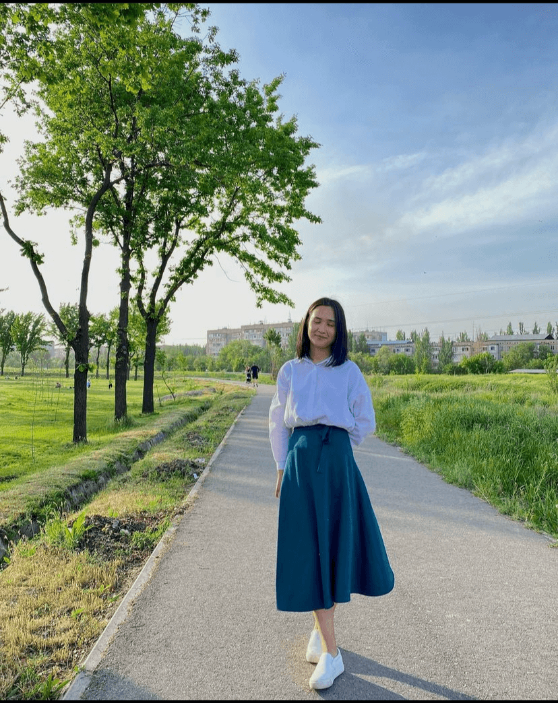
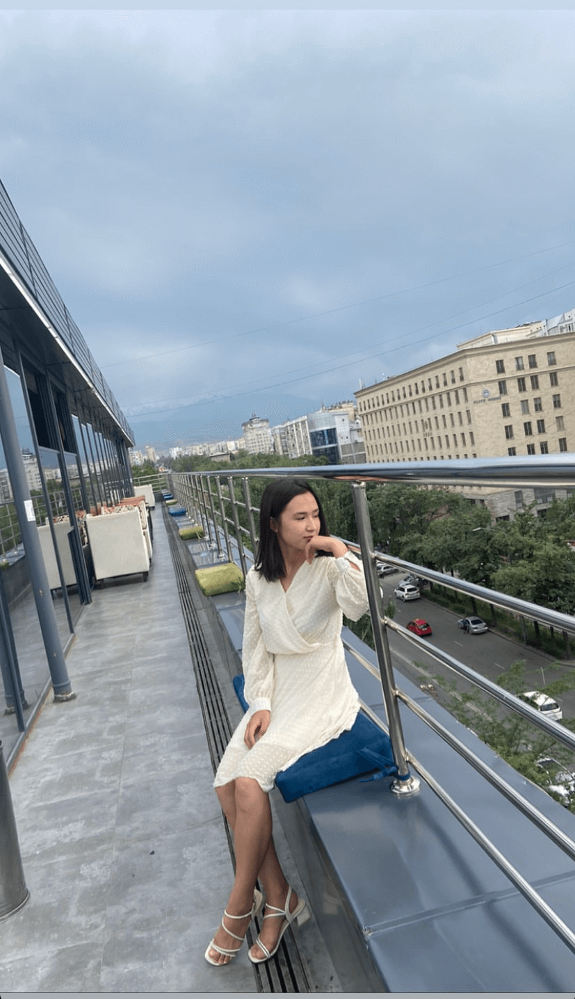
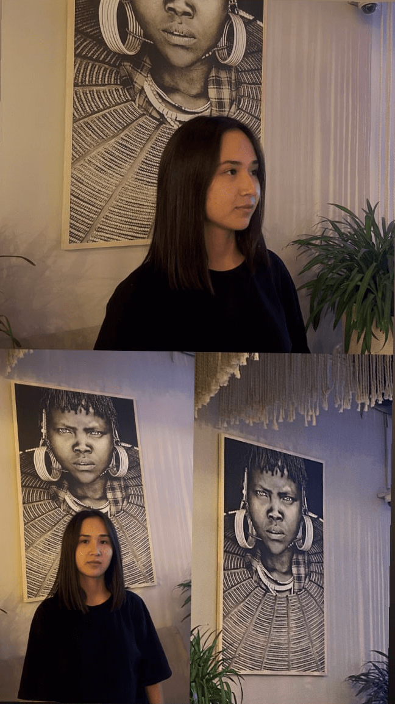
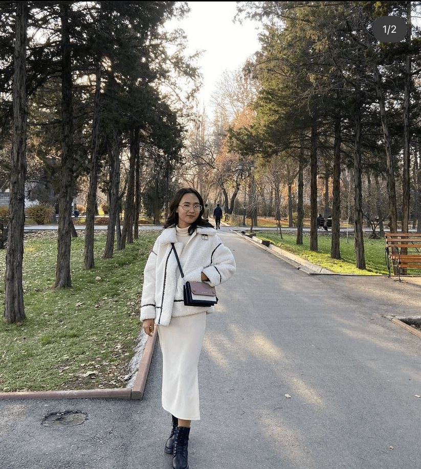

Айзирек
Пусть сбываются мечты, и жизнь дарит только самое лучшее: счастье и радость, здоровье, благополучие и успех!
Пусть сбываются мечты, и жизнь дарит только самое лучшее: счастье и радость, здоровье, благополучие и успех!